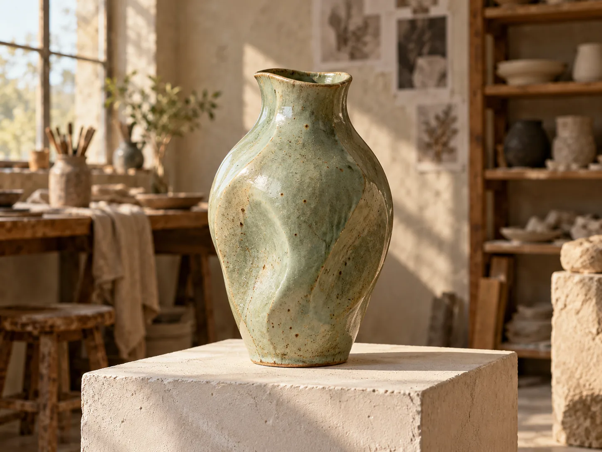

Coleção
Peças, materiais, tamanhos e disponibilidade organizados para consulta.
Peças que carregam marcas de mãos, fogo e intenção. Uma experiência digital que convida a olhar de perto.
Explorar a coleçãoEm um projeto real, o ateliê mostraria pessoas, técnicas e obras próprias. Aqui, o conceito apresenta como uma história de produção pode criar contexto para a coleção e para as oficinas.

Experimente acabamentos ilustrativos e imagine como um catálogo real pode apresentar variações com clareza.
Areia selecionado. Ilustração de acabamento; peças e estoque são fictícios.
Dois acabamentos lado a lado ajudam a decidir o clima de uma coleção. As amostras são gráficos conceituais; o resultado de uma queima real pode variar.
Quente e mineral, para uma presença discreta.
Profundo e sereno, com contraste mais marcado.
Peças, materiais, tamanhos e disponibilidade organizados para consulta.
Turmas, calendário e inscrição apresentados com o ritmo do ateliê.
Um caminho claro para conversar sobre objetos e projetos especiais.
Terra Viva é uma marca fictícia criada para mostrar possibilidades digitais a ateliês e marcas autorais.
Conhecer a ServAgency ↗